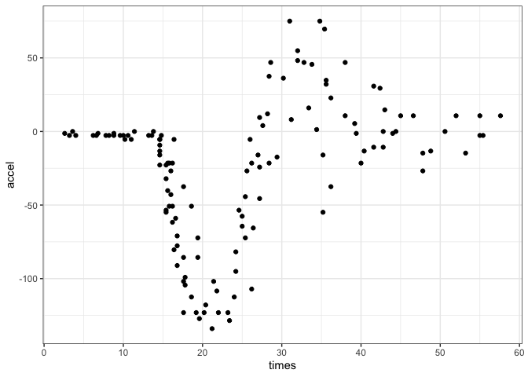
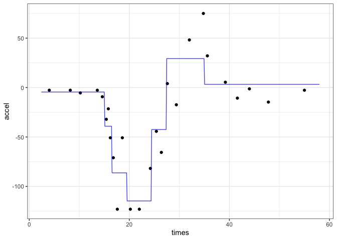
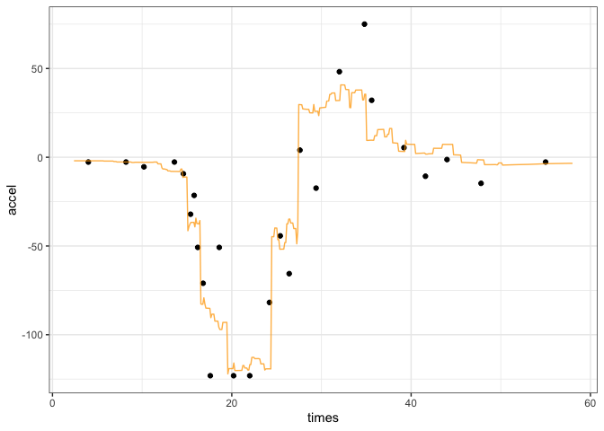

The goal of adjusting is to make better predictions for regression models by adjusting them using the most similar points from the training set. We implement the method of Quinlan (1993) and the Gower distance.
Example
Let’s model the motorcycle helmet data in the MASS package with a regression tree as an example. First, the data and the original CART fit:
library(adjusted)
library(workflows)
library(dplyr)
library(parsnip)
library(ggplot2)
# Also required the rpart package to be installed
# Use the 1D motorcycle helmet data as an example
data(mcycle, package = "MASS")
# Use every fifth data point as a test point
in_test <- ( 1:nrow(mcycle) ) %% 5 == 0
cycl_train <- mcycle[-in_test, ]
cycl_test <- mcycle[ in_test, ]
# A grid to show the predicted lines
mcycle_grid <- tibble(times = seq(2.4, 58, length.out = 500))There is a nonlinear relationship between the predictor and outcome:

The CART fit is, as expected, blocky:
cart_spec <- decision_tree() %>% set_mode("regression")
cart_fit <-
workflow(accel ~ times, cart_spec) %>%
fit(data = cycl_train)
raw_pred <- augment(cart_fit, mcycle_grid)
raw_pred %>%
ggplot(aes(x = times)) +
geom_point(data = cycl_test, aes(y = accel)) +
geom_line(aes(y = .pred), col = "blue", alpha = 3 / 4)
The nn_adjust() function collects the information that it needs by storing the fitted workflow as well as the training set:
adj_obj <- nn_adjust(cart_fit, cycl_train)The predict() or augment() methods can be used to make the original prediction along with the adjustment. The number of neighbors is specified here:
adj_obj <- nn_adjust(cart_fit, cycl_train)
adj_pred <- augment(adj_obj, mcycle_grid, neighbors = 10)
head(adj_pred)
#> # A tibble: 6 × 2
#> .pred times
#> <dbl> <dbl>
#> 1 -1.99 2.4
#> 2 -1.99 2.51
#> 3 -1.99 2.62
#> 4 -1.99 2.73
#> 5 -2.00 2.85
#> 6 -2.00 2.96For the held out data, there are different predictions:
adj_pred %>%
ggplot(aes(x = times)) +
geom_point(data = cycl_test, aes(y = accel)) +
geom_line(aes(y = .pred), col = "darkorange", alpha = 3 / 4)
Code of Conduct
Please note that the adjusted project is released with a Contributor Code of Conduct. By contributing to this project, you agree to abide by its terms.